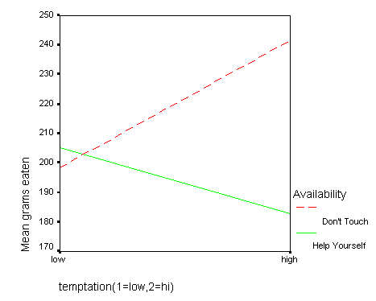

This handout will describe the steps for analyzing a 2 x 2 factorial design in SPSS and interpreting the results. Before beginning this section, you should already understand what “main effects” and “interactions” are, and be able to identify them from graphs and tables of means.
The following line graph shows the means of the four conditions in the dataset that will be used to demonstrate the analysis of factorial designs. The design is based on that of a published study of eating behavior of chronic dieters, but the data used in this demonstration is entirely fictitious. You should be able to identify the two independent variables and the dependent variable from the graph. You should also be able to look at the graph and tell whether there appears to be a main effect of each independent variable, and whether there appears to be an interaction of the two variables. Then you can follow the instructions below and use SPSS to determine whether the interaction or main effects are statistically significant.
Line Graph of Hypothetical Data
IV1 = availability of snacks (participants told “don’t touch” vs. told “help yourself”)
IV2 = temptation level (high = snacks near by; low = snacks across the room)

The data file that is used for this demonstration is 242-factorial-anova-dieting. You may follow the link to download this file and analyze it yourself in SPSS. Look at the data file and identify the independent and dependent variables. Also notice how the levels of each IV are coded in the data file.
You should begin by doing “exploratory data analysis” – getting descriptive statistics and graphs that will help you to identify possible problems in your data, such as invalid data points or outlying data points (“outliers”). You should already be familiar with these concepts and procedures from your Psy 241 course; if not, you should review the notes on this topic from my Psy 241 course (available from my home page).
Although you could do exploratory data analysis on the dataset as a whole, it is usually better to examine each condition separately for outliers and invalid data. Notice that an extra variable, “condition”, has been included in the data file to make it easier to do exploratory data analysis by condition. “Condition” simply has values from 1 to 4, corresponding to the four conditions defined by the two independent variables.
To perform exploratory analysis on this data file, follow these steps in SPSS:
The resulting SPSS output should begin with a table labeled “Case Processing Summary.” You should check this table to make sure that the number of observations in each condition is correct (in this case, 20). If you happened to enter some data incorrectly, this table might bring that to your attention.
Next you should see a long table labeled “Descriptives” containing many descriptive statistics for each condition. You should pay special attention to the “minimum” and “maximum” values listed. If you accidentally misplaced a decimal point when entering data, you might notice an impossible value this way and catch your mistake.
Next you should see a series of stem and leaf plots, one for each condition. You can think of these as sideways histograms – they show you the distribution of the data points in each condition. SPSS also identifies any “Extremes” in each condition. These are outliers – data points that are so far from the mean of that condition that they probably resulted from the participant not paying attention or not following instructions. You should jot down the values of any outliers that SPSS identifies. You will probably want to go back to your data file and exclude those values before analyzing the data further. In this data set, there are 4 outliers in condition 4: two with values <= 98 and two >= 269.
Finally, you should see a box plot – a figure that displays one box for each condition. The box plot visually displays the distribution of the data in each condition, and identifies outliers as points above or below the “whiskers” that extend from each box. You should see the four outliers in condition 4 shown in the box plot. This is another way of displaying the same information that was given in the stem and leaf plots.
Before going on to analyze the data further, delete the four outlying data points from the data file. To delete a data point, click on the cell containing that data point, then select “cut” from the Edit menu.
Follow these steps to perform the analysis:
You should then see “Univariate Analysis of Variance” in the SPSS output window.
The first table, labeled “Between-subjects Factors,” displays the number of observations in each condition. You should check to make sure that there are the right number of subjects in each condition. (Remember that you deleted four outliers from one of the conditions.)
In the next table, “Tests of Between-Subjects Effects,” you will find the results of the ANOVA. Look in the column labeled “Source” to find the main effect or interaction you are interested in. Then look at the F value and the p value (labeled “sig”) to see whether the effect was statistically significant.
Next you should see a series of tables under the heading “Estimated Marginal Means.” These will give you the mean and standard error for each level of each of your IVs, and for each of the four conditions defined by the interaction of the two IVs. (Remember that the standard error is a measure of variability, like the standard deviation.) You can use these means to report in your results section or to create tables or figures.
Here is an example of how the results of this ANOVA might be reported:
The main effect of availability was significant, F (1, 72) = 5.94, p < .05. Participants ate more grams of ice cream when they had been told “Don’t touch,” mean = 220, SE = 7.66, than when they had been told “Help yourself,” mean = 193, SE = 8.12. The main effect of temptation was not statistically significant, F (1, 72) = 0.66, n.s., MSe = 2345. The interaction of availability and temptation was significant, F (1, 72) = 9.32, p < .01. This interaction indicated that ice cream consumption was greater with high temptation (mean = 242 grams, SE = 10.83) than with low temptation (mean = 198, SE = 10.83) when participants had been told “Don’t touch,” but when participants had been told “Help yourself” high temptation led to lower consumption (mean = 180, SE = 12.12 for high temptation; mean = 205, SE = 10.83 for low temptation).
Notice that two different measures of variability were reported: the standard error of the mean (SE) and the mean square error (MSe). For each comparison that you perform you should report a measure of variability. This could be the mean square error from the ANOVA, or it could be standard deviations or standard errors reported along with the means. It is not necessary to do both, and usually you will use one or the other consistently throughout the results section. A good rule of thumb is to get in the habit of reporting a standard deviation or standard error with each mean you report.
Analysis
of Variance for a Within-Subjects 2 x 2 Factorial Design
Now use the data file 242-factorial-anova-dieting-repeated to work through a demonstration of how to analyze a within-subjects version of the same experiment. Notice that each “variable” in the SPSS file corresponds to one condition of the experiment. Also notice that there are four data points on each row, because each subject contributed data for all four conditions.
Again begin by doing exploratory data analysis and removing outliers. Follow the instructions above, but include all four “variables” (all four conditions) in the dependent list. Delete the four outliers that you identify.
Now follow these steps to perform an ANOVA on this data:
In the results, skip down to the table labeled “Tests of Within-Subjects Effects.” For each main effect and interaction, look at the line labeled “Sphericity Assumed” to find the F value, degrees of freedom, and p value.
Then look at the tables under the heading “Estimated Marginal Means” to find the descriptive statistics you need for reporting the data.
Here is an example of how the results of this ANOVA might be reported:
The main effect of availability was significant, F (1, 15) = 7.96, p < .05. Participants ate more grams of ice cream when they had been told “Don’t touch,” mean = 222, SE = 11.69, than when they had been told “Help yourself,” mean = 193, SE = 3.28. The main effect of temptation was not statistically significant, F (1, 15) = 0.003, n.s., MSe = 2396. The interaction of availability and temptation was significant, F (1, 15) = 6.37, p < .05. This interaction indicated that ice cream consumption was greater with high temptation (mean = 234 grams, SE = 9.00) than with low temptation (mean = 210, SE = 19.80) when participants had been told “Don’t touch,” but when participants had been told “Help yourself” high temptation led to lower consumption (mean = 180, SE = 5.48 for high temptation; mean = 206, SE = 6.08 for low temptation).
Notice that some of the means are different from those in the between-subjects version of the experiment, even though we used exactly the same data in both examples. This is because of the way that SPSS handles the missing data points (the four outliers that we eliminated) in within vs. between-subjects designs.